01
Red box grows from the corner
Red box behind text: scale it up from its bottom-left corner instead of sliding it in.
Before · first draftAfter · final
These are the exact notes I gave AI to take my reel from a bad first draft to the final cut in one day. AI built every graphic in that reel. These notes are where my job actually happened.
Use it in three steps: write a kickoff brief before AI touches anything, review the first draft like you would a junior editor's, then give notes one at a time. Copy any line below and swap in your own words, colours and timings.
A good prompt answers four questions. Leave one out and AI guesses, and its guess is usually the generic version.
| Prompt | What you get | |
|---|---|---|
| Client | "Make it pop." | Bouncing text, a rainbow shadow, nothing you'd post |
| Editor | "Red box behind 'replace'. Grows from the bottom-left corner. Eased, no bounce. Lands on the word as I say it." | The exact animation you pictured |
Before AI edits anything, give it the same brief you'd give a new editor on your team. This is the one I used, with blanks for yours.
I'm making a [length]-second Instagram reel. My face is only in the hook; after that it's motion graphics over my voiceover. Script: [paste it, one line per row, with what should be on screen for each line] Style: [name it, e.g. Paper & Ink]. Background [colour + texture]. Text colour [hex]. Accent colour [hex], used only on the word that matters. Fonts: [main font] for sentences, [accent font] for the emphasis word. References: [link or file] — take [the one specific thing] from it. One line per reference. Signature moves: [e.g. red box behind a word, strike-and-correct, cursor selection box, word-by-word text timed to the voice]. Never: [e.g. grain, logos spinning or popping in, text appearing before I say it]. Layout: everything centred unless something fills the screen. Spare space goes at the top and bottom.
The line that matters most is "take [one specific thing] from it". A reference without a note is just a mood board.
Grouped by what they fix. Each one changes a single thing. The first draft is on the left, the final on the right; the motion notes play as loops, because a still can't show a move.
Red box behind text: scale it up from its bottom-left corner instead of sliding it in.
The red box gets stuck halfway. Make it one smooth, eased move, no bounce.
Selection box: the cursor enters from the left and draws the dashed rectangle as it moves, so the two are connected.
Hide the dot before the strike-through. Nothing shows until the line starts drawing.
Grid background: a slow, continuous zoom-in for the whole reel.
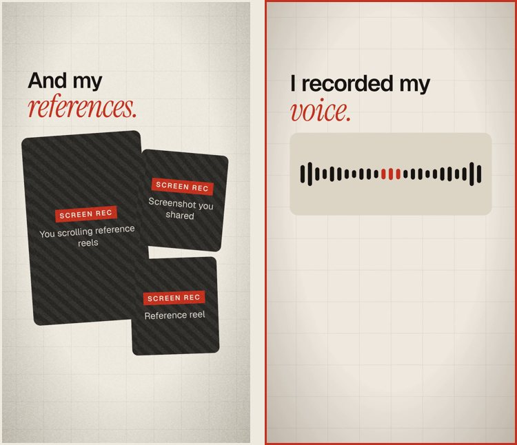
No cheap logo animations. No logo spinning or popping in; show it still.
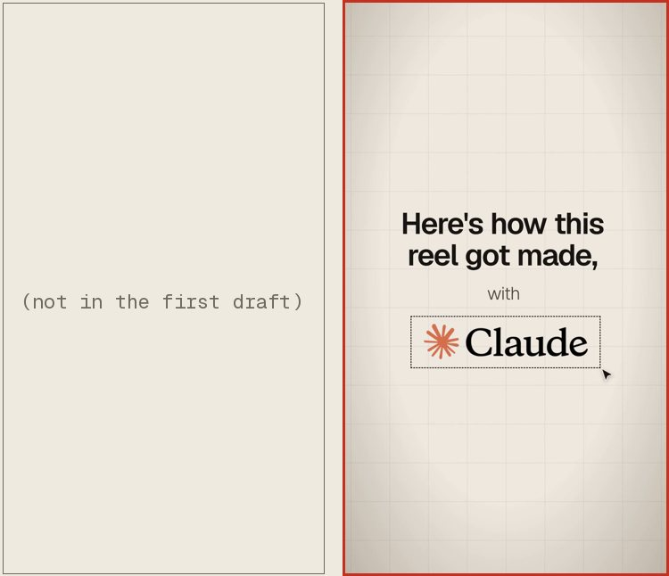
Text never appears before I say it. Each word lands as I speak it.
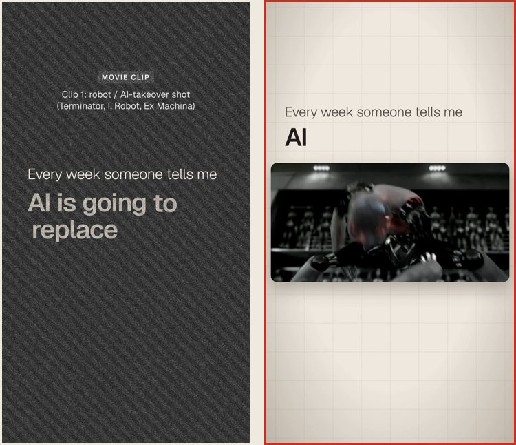
"Mine": one word on screen that grows each time I say it, not three separate slams.
Follow button at the end: the cursor clicks it and it turns into "Following".
Fonts and colours in one continuous frame: after "fonts", the line moves up and shrinks, the two fonts sit side by side and the colour swatches go below.
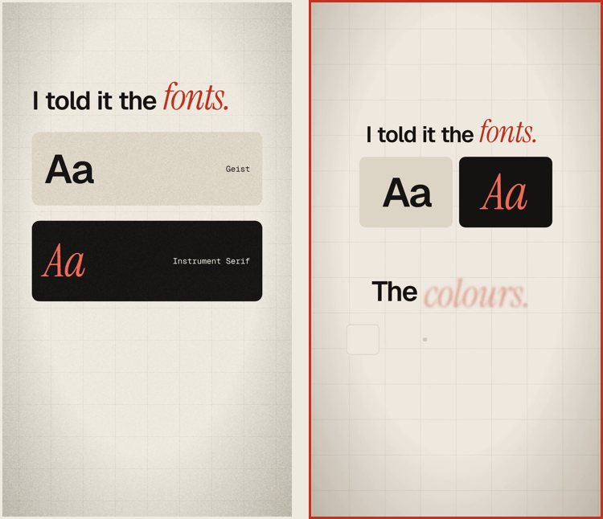
Three declined proposals, all stamped DECLINED. Fill the screen, and if a layout doesn't fill it, centre it.
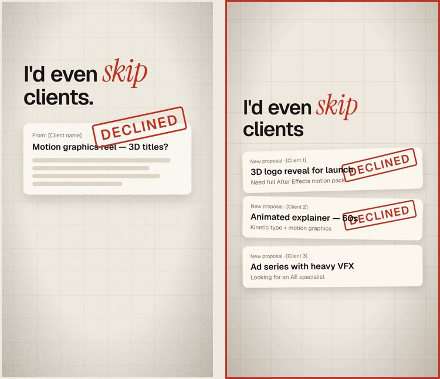
Move the caption card up; it's sitting in Instagram's caption area.
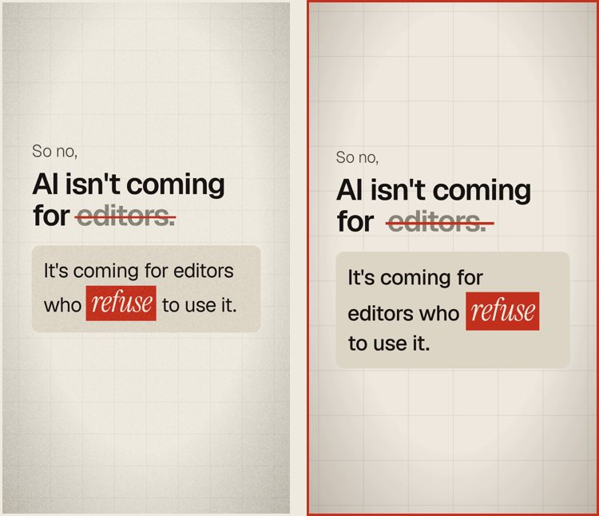
"I'm one of them": bigger type, centred. Laptop in the centre, blurred, with the error dialog on top.
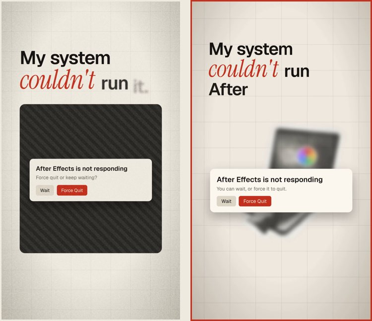
Hook: text in the sky, with the big line behind my head.
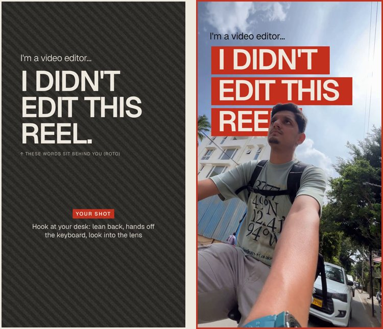
Movie references on a white background, always centred.
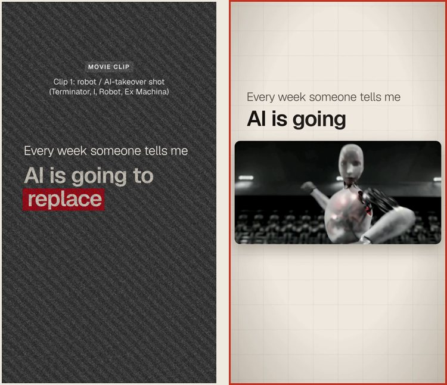
Replace the "fighting" graphic with my over-the-shoulder B-roll, with the type placed to fit the shot.
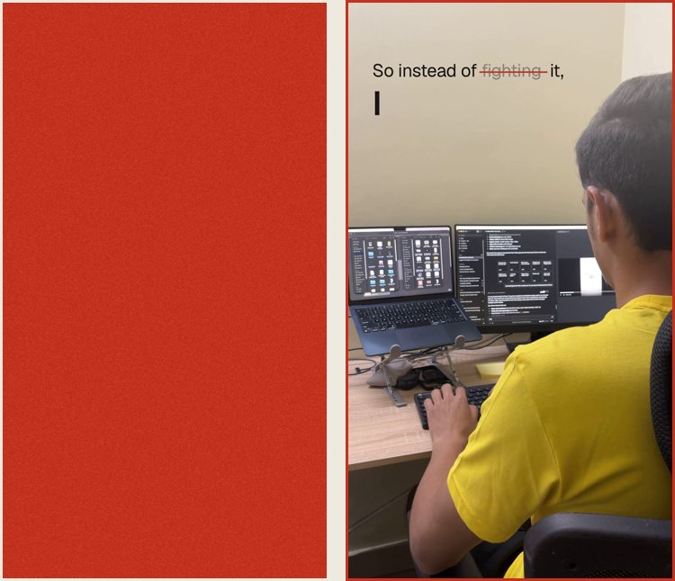
Remove the grain.
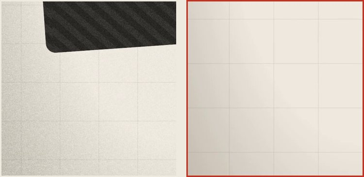
Add real elements, like the laptop, a desk and an editor silhouette, and name the AI tool on screen.
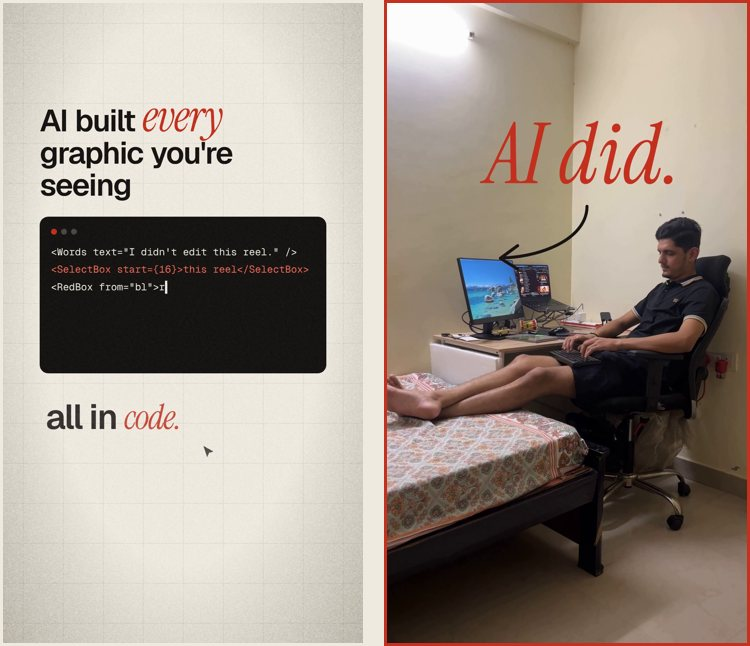
A useful note names the element, the problem and the fix. If a junior editor would need to ask "which one?" or "how?", AI will guess too.
| Vague | Useful |
|---|---|
| "Make it smoother." | "The red box stops halfway. Make it one eased move, no bounce." |
| "It looks cheap." | "The logo spins in. Show it still." |
| "Fix the layout." | "Move the caption card up, out of Instagram's caption area." |
| "Text is off." | "Each word should appear as I say it, not before." |
| "Make it more modern." | "From reference 3, take the text behind the person." |
When something is wrong, don't regenerate the whole edit. Give one note, check it, then give the next.
AI doesn't need better prompts. It needs an editor's eye. These notes only worked because I knew what looked wrong before I typed anything.
I'm sharing how I edit with AI, one reel at a time. Follow along on Instagram.